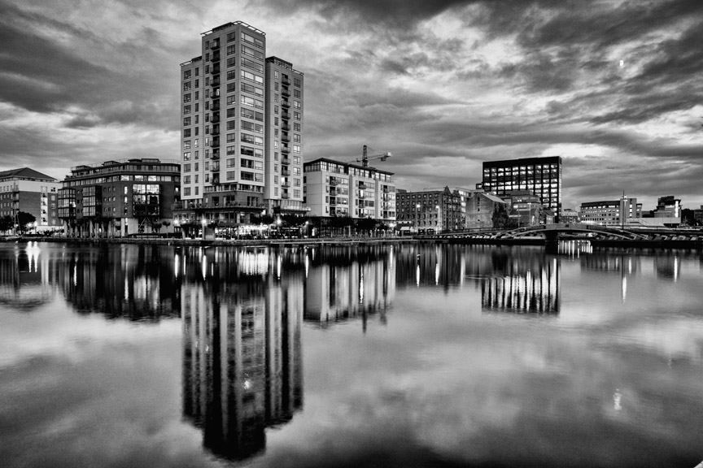
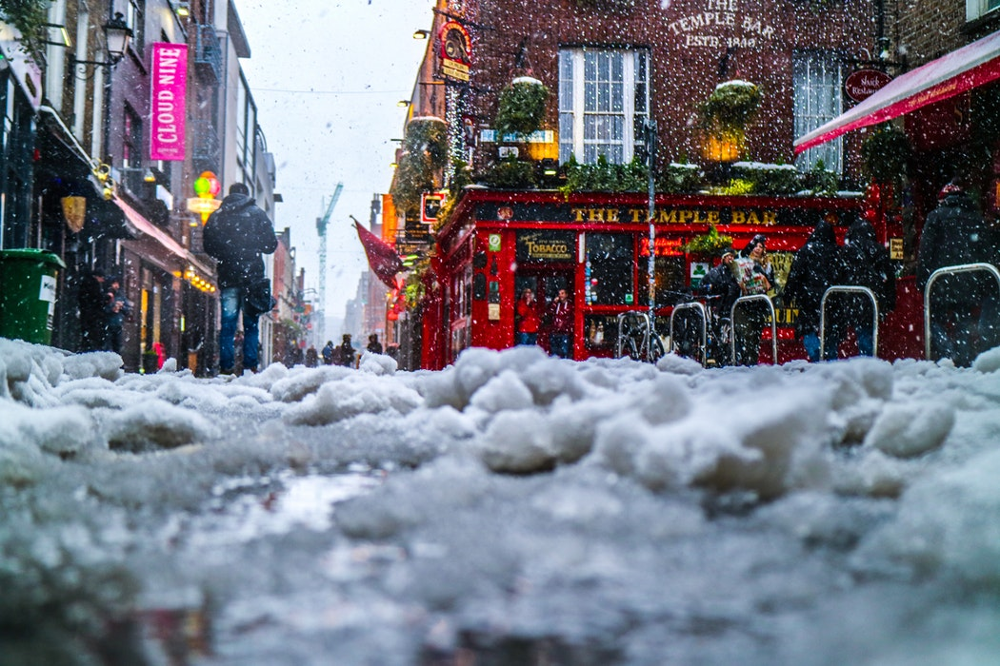
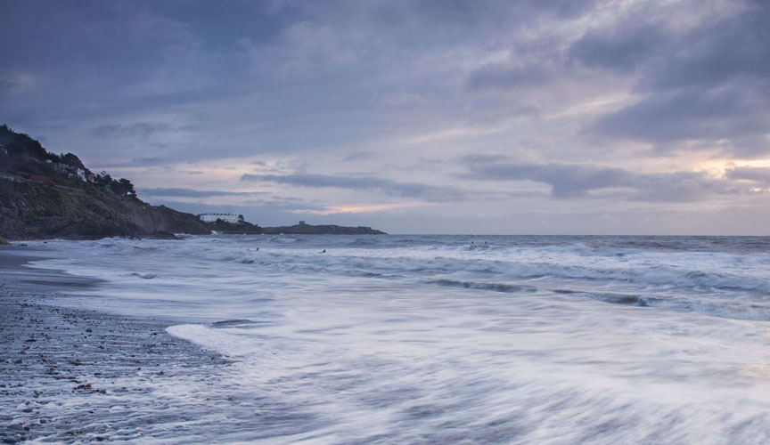
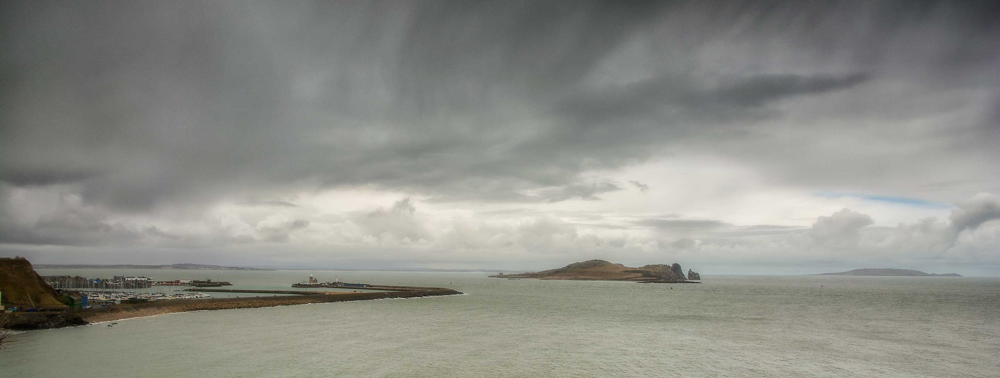
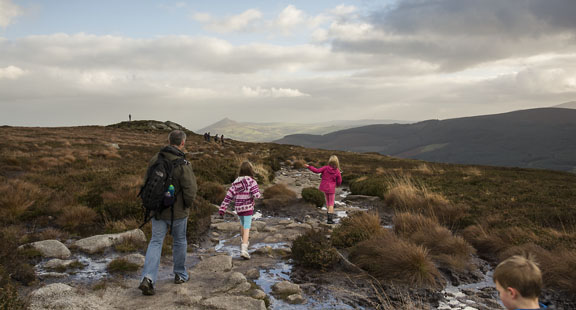
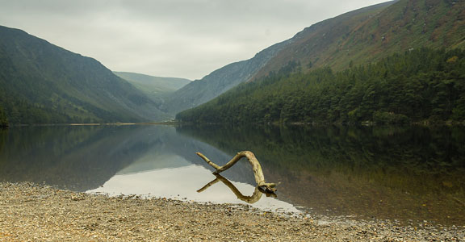
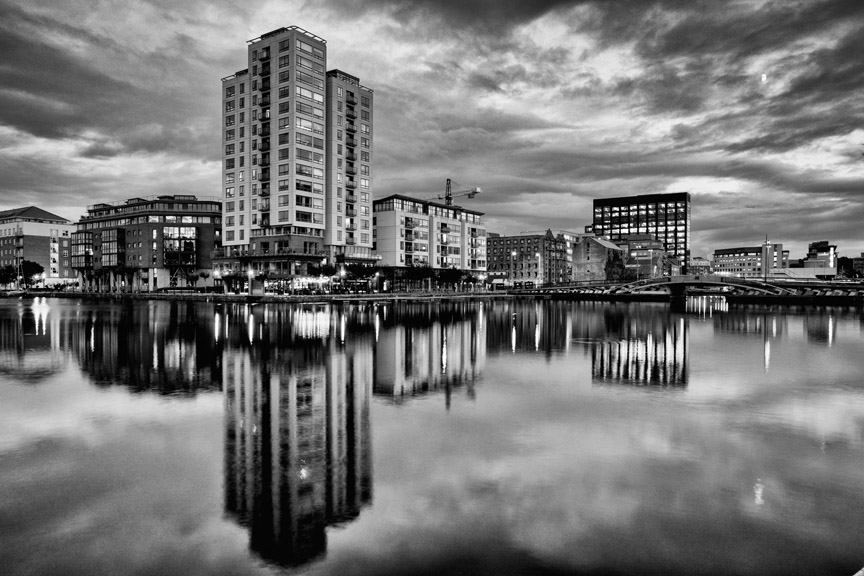
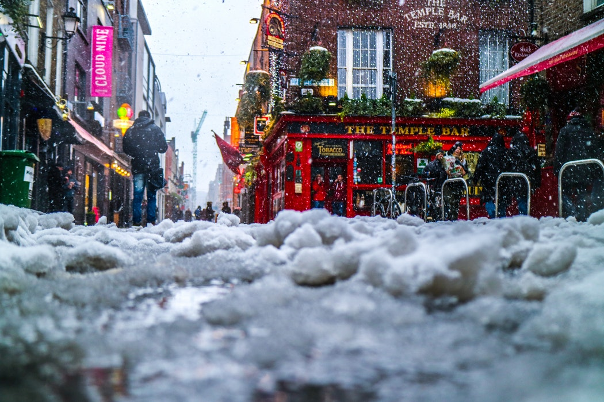
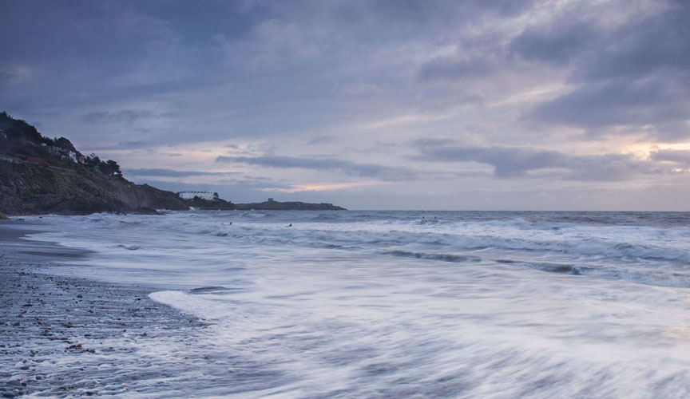
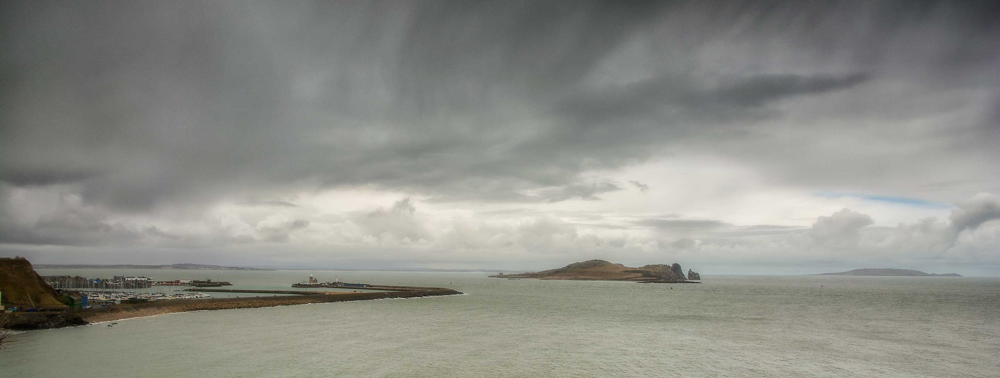
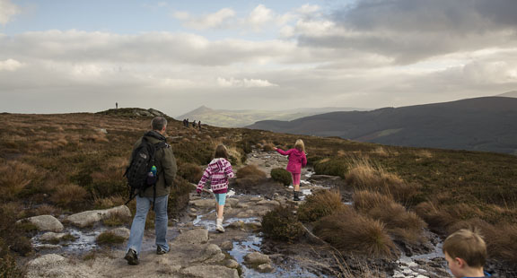
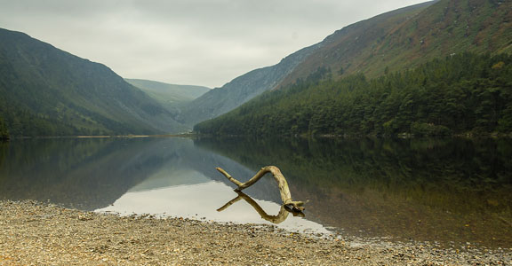
Planning your holiday
Here at Dublin Bay View B&B we can assist you in planning your stay.
Sightseeing tours to Malahide Castle, Howth village or tours of Dublin can be arranged. If you book through us, we can offer a special discounted rate guests.
Here is a list of our most popular activities
- Dublin City tour
- A tour around Dublin city can be organised by bus or on foot. The city centre is small enough to explore on foot, or, a bus can take you to sights in the greater Dublin area.
- Trinity College Dublin
- Dublin bus tour
- Dublin walking tour
- Malahide Castle and Park tour.
- This is a wonderful castle and park, in the beautiful seaside village of Malahide. A castle has been on the grounds here since 1175 and 800 years after the Talbot family arrived, there is still much to explore.
- Malahide Castle & Gardens
- Wicklow Mountains and Glendalough
- The Wicklow mountains are where lakes, mountains and boglands combine with spectacular vistas round every bend of the road. Visit the Sally Gap, Lough Tay - Guinness Lake - beautiful Roundwood and Powerscourt. Take in the outstanding beauty of Glendalough, ancient monastic city, and hike around the lakes and mountains surrounding this calm and relaxing area.
- Wicklow Bus Tour
- Glendalough
- Sunrise or Sunset tours of the coast
- As we are on the east coast of Ireland, the sunrise can be spectacular. Step out the door of our luxury guesthouse and experience nature at its most spectacular. Sunset is more gentle with lovely pastels colouring the sky. Photography workshops can be arranged on a one to one basis in order to capture forever memories of your visit to Dublin.
- Local area amenities
- We are conveniently located close to two sandy beaches offering fabulous costal walks, a number of friendly local pubs and restaurants, a local golf course and a variety of water sports. Bikes and helmets are also available to hire.